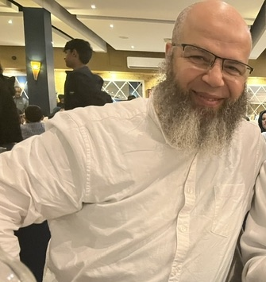

Dr Rachid Tazi
Lead Academic, Trojan Tutoring
A Message From Our Lead Academic
I am Dr Rachid Tazi, a medical professional with extensive experience across clinical practice, medical education and university admissions.
I have been directly involved in interviewing and assessing medical applicants, giving me a unique insight into what medical schools look for beyond academic achievement. I understand the qualities, communication skills, critical thinking and professionalism that distinguish a strong candidate at interview.
My passion for supporting aspiring doctors became particularly personal when I helped my son navigate the medical school admissions process. Through structured preparation and guidance, he successfully secured interviews at all four medical schools he applied to and went on to receive offers from all four — achieving a 4/4 success rate.
This experience reinforced my belief in the value of personalised, expert interview preparation. At Trojan Tutoring, I now want to use my experience and insight to help other aspiring medical students approach their interviews with the same confidence, preparation and understanding of what interviewers are looking for.
My aim is to give every candidate the knowledge, guidance and confidence to maximise their potential and, ultimately, secure their place at medical school.
His Expertise
Dr Rachid Tazi
Dr Rachid Tazi is an experienced medical academic, researcher and educator with more than three decades of experience across medical education, scientific research and university admissions. He has taught and conducted research at the University of Sheffield Medical School, with expertise spanning molecular biology, genetics, immunology and dermatological research, and has contributed to more than 100 scientific publications in internationally recognised journals.
Alongside his academic and research career, Dr Tazi has extensive experience in medical admissions. At the University of Sheffield, he served on the Medical Student Interviewing Panel and interviewed hundreds of prospective medical students alongside medical and scientific academics and student representatives, giving him first-hand insight into the communication, professionalism, reasoning and personal qualities assessed at interview.
At Trojan Tutoring, he brings this academic and admissions experience directly into medical interview preparation. His approach focuses on MMIs, communication, ethical reasoning, empathy, critical thinking and helping candidates use their own experiences effectively, so they understand what interviewers are assessing and can approach their interviews with greater confidence and structure.
Tutoring Programme
Tutoring Format
The programme begins with a comprehensive introductory session covering the MMI format, including the structure, expectations and most common themes encountered across medical school interview stations.
It is important to recognise that MMI stations can vary between medical schools and may change from year to year. However, there are several core themes and station types that are commonly assessed across UK medical schools. These form the foundation of our preparation programme.
Subsequent sessions are fully personalised to each candidate, using their CV, experiences, achievements and individual strengths as a basis for preparation. Candidates will learn how to draw upon their own experiences and effectively apply them to a wide range of MMI scenarios.
The number of sessions required will depend on the individual candidate, their experience and the medical schools they are applying to. For most candidates, three to four focused sessions should provide comprehensive preparation, with additional sessions available where required.
Learning Outcomes
- Understand the MMI format — including its structure, expectations and assessment criteria.
- Understand the core MMI themes and station types commonly encountered across UK medical schools.
- Apply their own experiences and strengths effectively to different MMI scenarios.
- Develop confident and structured communication when responding to challenging interview questions.
- Demonstrate key qualities such as empathy, ethical reasoning, critical thinking and professionalism.
- Approach MMI stations with greater confidence, adaptability and a clear understanding of what interviewers are assessing.